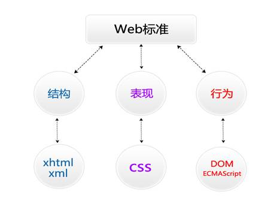

第一天
Html基础
1.建站流程
注册域名――租用空间――网站建设――网站推广――网站维护
其中网站建设包括：1.确定网站主题，2搜集资料，3.规划网站，4制作页面
2.html相关概念的介绍
Html指的是超文本标记语言
由一套标签组成的语言称为标记语言
Xhtml指的是可扩展超文本标记语言
Html5指的是HTML的第五次重大修改
3.html的发展历程
1993年html1.0――1995年html2.0――1996年html3.2――1997年html4.0――1999年html4.01――2000年xhtml1.0――2001年xhtml1.1――xhtml2.0――2004whatwg html5草案――2008年合并html5正式版――html5 2014年正式发布
4.web标准，w3c,whatwg,ecma

结构，表现，行为，对应xhtml/xml，csss,dom/ecmascript
5.w3c制定的结构和表现的标准
W3C( World Wide Web Consortium )万维网联盟，创建于1994年是Web技术领域最具权威和影响力的国际中立性技术标准机构。(制定了结构html和表现css的标准，非赢利性的。)
ECMA制定的行为的标准
欧洲电脑场商联合会。
6创建站点
1)站点的作用
用来归纳一个网站上所有的网页、素材以及他们之间的联系
2)创建站点的步骤
3)文件的命名规则
件命名规则：用英文，不用中文
名称全部用小写英文字母、数字、下划线的组合，其中不得包含汉字、空格和特殊字符；必须以英文字母开头。
首页必须命名为index.html
7.HTML基本语法
1)常规标记
<标记 属性=“属性值” 属性=“属性值”></标记>
2)空标记
<标记 属性=“属性值” />
说明：
1.写在<>中的第一个单词叫做标记，标签，元素。
2.标记和属性用空格隔开，属性和属性值用等号连接，属性值必须放在“”号内。
3.一个标记可以没有属性也可以有多个属性，属性和属性之间不分先后顺序。
4.空标记没有结束标签，用“/”代替。
8.HTML常用标题
1)文本标题
<h1>一级标题</h1> 一般用于做logo的标签，且要注意唯一的。
<h2>二级标题</h2>
……
<h6>六级标题</h6>
2)段落标记
<p>段落文本内容</p>
3）空格 ( )
（所占位置没有一个确定的值,这与当前字体字号都有关系。
4）加粗
<b>加粗内容</b>
<strong>加粗内容</strong>
5）倾斜
<em></em>
<i></i> 一般可用于作小图片的定位
6） 强制换行
<br />
7）水平线
<hr />
8）列表(ul,ol,dl) 一般要加上公共样式ul,li{list-style:none}
HTML中有三种列表，分别是：无序列表，有序列表，自定义列表
*自定义列表
<dl>
<dt>名词</dt>
<dd>解释</dd> (definition description 定义描述)
．．．．．．
</dl>
9) 插入图片 公共样式img{border:0;display:block;}
<img src="目标文件路径及全称" alt="图片替换文本" title="图片标题" />
注:所要插入的的图片必须放在站点下
*相对路径的写法：
1)当当前文件与目标文件在同一目录下，直接书写目标文件文件名+扩展名；
2)当当前文件与目标文件所处的文件夹在同一目录下，写法如下：
文件夹名/目标文件全称+扩展名；
3)当当前文件所处的文件夹和目标文件所处的文件夹在同一目录下，写法如下：
../目标文件所处文件夹名/目标文件文件名+扩展名
10）超链接的应用
语法：
<a href="目标文件路径及全称/连接地址">链接文本/图片</a>
属性：target:页面打开方式
默认属性值：_self。
属性值：_blank 新窗口打开
11）数据表格的作用及组成
作用：显示数据
组成： <table>
<tr>
<td></td>
<td></td>
</tr>
</table>
*数据表格的相关属性
width="表格的宽度"
height="表格的高度"
border="表格的边框"
bgcolor="表格的背景色"
cellspacing="单元格与单元格之间的间距"
cellpadding="单元格与内容之间的空隙"
水平对齐方式：align="left/center/right";
*合并单元格属性：
colspan=“所要合并的单元格的列数"合并列;
rowspan=“所要合并单元格的行数”合并行;
12.表单的应用
表单的作用：用来收集用户的信息的;
表单框 ：
<form name="表单名称" method="post/get" action="">
</form>
文本框
<input type="text" value="默认值"/>
密码框
<input type="password" />
提交按钮
<input type="submit" value="按钮内容" />
重置按钮
<input type="reset" value="按钮内容" />
单选框/单选按钮
<input type="radio" name="ral"/>
<input type="radio" name="ral" />
单选按钮里的name属性必须写，同一组单选按钮的name属性值必须一样。
复选框
<input type="checkbox" name="like" />
<input type="checkbox" name="like" disabled="disabled" />
(disabled="disabled" :禁用)
(checked="checked" :默认选中)
下拉菜单
<select name="">
<option>菜单内容</option>
</select>
多行文本框（文本域）
<textarea name="textareal" cols="字符宽度" rows="行数">
</textarea>
按钮
<input name="'" type="button" value=“按钮内容” />
（他和submit的区别是 ，submit是提交按钮 起到提交信息的作用，button只起到跳转的作用，不进行提交。）
13）div的用法
<div id="id名"/class="class名"></div>
文档区域，文档布局对象
14） span的用法
<span></span>
文本结点（某一小段文本，或是某一个字）